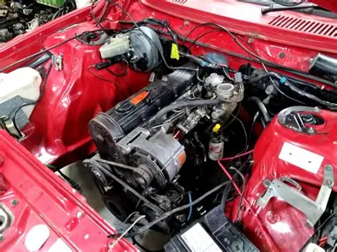

Har du en D24TIC som har rasat eller behöver renoveras? Här är en perfect guide för hur du demonterar hela motorn och flrbereder för renovering.

Hylsnyckelsats, 8–32 mm Ringnyckelsats U-ringnycklar Spärrskaft och förlängare Momentnyckel Insexnyckelsats Torxnyckelsats Skruvmejslar, raka och kryss Tänger och polygrip Låsringstång Brytjärn Gummiklubba Hammare Dorn och drivverktyg Avdragarsats för remskivor och drev Motorlyft Motorstativ Verktyg för att låsa svänghjulet Kamaxelhållare Insprutningspumpslåsning Indikatorklocka med hållare Remspänningsmätare Spridarhylsa, 27 mm Kolvringskompressor Kolvringstång Ventilfjäderkompressor Lageravdragare Mikrometer Skjutmått Avfettningsmedel Bromsrengöring Trasor Märktejp Märkpenna Zip-påsar Uppmärkningsbara sorteringslådor Dräneringskärl för olja och kylarvätska Skyddshandskar Skyddsglasögon
Parkera bilen på en plan yta och låt motorn kallna helt. Koppla bort batteriets minuspol. Ta bort motorhuven om den är i vägen. Fotografera motorrummet från flera vinklar. Märk upp alla kablar, slangar och kontakter. Placera ett uppsamlingskärl under motorn. Tappa ur motoroljan. Tappa ur kylvätskan. Ta bort luftfilterboxen och insugsslangarna. Ta bort intercoolerslangarna. Koppla bort kylarslangarna. Koppla bort bränsleslangarna och plugga öppningarna. Koppla bort elsystemet till generator, glödstift och givare.
Ta bort kylaren och fläkten. Lossa avgassystemet från turbon. Demontera eller frigör servopumpen från dess fäste. Demontera startmotorn. Koppla bort växellådan från motorn om den ska sitta kvar i bilen. Lossa motorfästena. Kontrollera att samtliga slangar, kablar och anslutningar är fria. Fäst motorlyften i motorns lyftöglor. Lyft försiktigt upp motorn ur motorrummet. Sänk ned motorn på ett stabilt motorstativ.
Volvos verkstadsanvisningar beskriver att D24TIC kan lyftas ur utan växellådan. Servopump och startmotor kan också frigöras och hängas undan.
Ta bort generatorn. Ta bort servopumpens fästen om de sitter kvar. Ta bort turboaggregatet. Ta bort grenröret. Ta bort insugningsröret. Ta bort EGR-komponenter om motorn har sådana. Ta bort ventilkåpan. Ta bort de främre och bakre kamremskåporna. Ta bort kylfläktens remskiva och drivremmar. Ta bort vattenpumpens kringutrustning vid behov.
Vrid motorn med vevaxelns centrumskruv tills cylinder 1 står i övre dödläge på insprutningsslaget. Kontrollera att svänghjulets nollmärke står rätt. Kontrollera att cylinder 1:s båda kamnockar pekar snett uppåt. Dokumentera remmarnas och drevens placering. Lossa vattenpumpens infästningar så att kamremmens spänning släpper. Ta bort kamremmen. Lossa insprutningspumpens fästen så att pumpremmen blir slak. Ta bort pumpremmen. Lås insprutningspumpens drev med rätt mothåll. Demontera pumpdrevet med avdragare. Demontera kamaxeldreven med rätt mothåll. Demontera spännrullar och övriga drev.
När kamremmen är borttagen får vevaxeln eller kamaxeln inte vridas innan topplocket har demonterats. Ventilerna kan annars slå i kolvarna och orsaka skador.
Koppla bort glödstiftskablarna. Koppla bort temperaturgivarnas kablar. Lossa spridarnas returledningar. Lossa bränsleledningarna till spridarna. Skruva ur samtliga sex spridare. Ta bort eventuella kvarvarande anslutningar till topplocket. Lossa topplocksbultarna i omvänd ordning mot monteringsordningen, stegvis. Lyft av topplocket rakt upp. Ta bort topplockspackningen. Lägg topplocket på träklossar så att ventilerna inte belastas.
Demontera kamaxeln enligt rätt demonteringsordning. Märk upp samtliga ventiltryckare så att de behåller sina cylinderpositioner. Ta bort ventiltryckarna. Använd ventilfjäderkompressorn för att komprimera ventilfjädrarna. Ta bort ventilernas låskilar. Släpp försiktigt ventilfjäderkompressorn. Ta bort ventilfjädrarna. Ta bort ventilerna. Ta bort ventiltätningarna. Sortera ventiler och komponenter efter cylinder.
Vänd motorn så att oljetråget är åtkomligt. Skruva loss oljetrågets samtliga bultar. Lossa försiktigt oljetråget från motorblocket. Demontera oljepumpens oljesil. Skruva loss oljepumpen. Demontera oljepumpens drivning. Ta bort eventuella kvarvarande kåpor och tätningar.
Märk upp samtliga sex vevstakar och vevstakslager. Kontrollera att märkningarna på vevstakarna är dokumenterade. Lossa vevstakarnas överfall. Ta bort vevstakslagren och förvara dem tillsammans med rätt vevstake. Tryck försiktigt ut kolvarna uppåt genom cylindrarna med lämpligt verktyg. Ta bort kolvringarna med kolvringstång. Separera kolvar och vevstakar om de ska inspekteras separat. Lossa vevaxelns ramlageröverfall i rätt ordning. Ta bort ramlageröverfallen. Lyft försiktigt ur vevaxeln. Ta bort ramlagerhalvorna. Ta bort eventuella axialbrickor. Demontera kvarvarande tätningar och lager.
Kontrollera att samtliga motordelar är demonterade. Sortera alla bultar efter komponent. Rengör motorblocket med avfettningsmedel. Rengör topplocket separat. Kontrollera cylinderloppen efter repor och slitage. Kontrollera kolvarnas skick. Kontrollera vevaxelns lagerbanor. Kontrollera kamaxeln och dess lagerlägen. Inspektera ventiler och ventilsäten. Kontrollera oljepumpen. Lägg alla delar på en ren arbetsbänk för vidare inspektion.